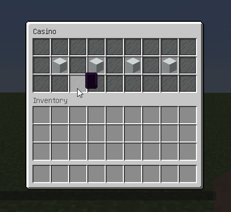
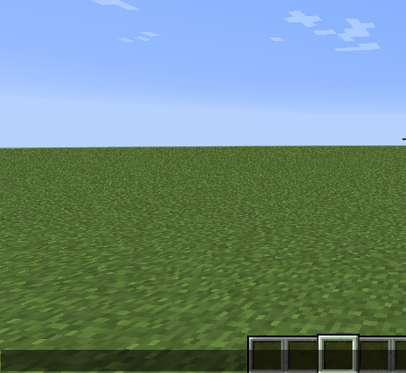
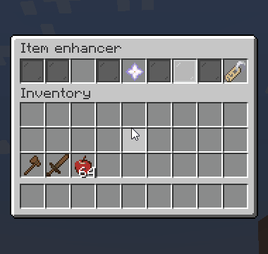

Examples
We prepared some examples of menus. They are sorted by difficult:
- Simple menus:
Menus with minimum features and required knowledges to repeat it by yourself.
- Medium menus:
Menus with using some not so difficult features, like variables, or more complex logical structures.
- Advanced menus:
Menus with advanced features using, like templates, animations, drag-and-drop, etc.
Attention
Some material names, used in these examples can not work on your Spigot version. We used materials for MC 1.13.
Simple menus
Name |
Depends |
Preview |
|---|---|---|
PlaceholderAPI with Player and Statistic expansions |
||
BungeeCord, PlaceholderAPI with Player and Bungee expansions |
|
|
Vault and any Economy plugin |
|


Advanced menus
Name |
Depends |
Preview |
|---|---|---|
Vault and any Economy plugin |
 |
|
Essentials, but you can use any plugin to kick/ban/mute players |
 |
|
Nothing |
 |
|
Nothing |
|